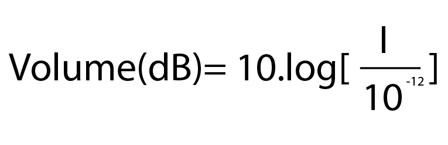

Pour mieux comprendre comment stocker un son efficacement, il vaut mieux comprendre de quoi il est fait ainsi que ses caractéristiques.
Définition
Tout d’abord qu’est-ce son qu’un? Un son est une vibration d’un fluide (solide, liquide ou gaz). Une onde est une propagation d’une perturbation sans transport de matière. Une onde Sonore est donc la variation d’une vibration dans un milieu sans transport de matière.
On appelle source sonore un objet qui vibre et qui est à l’origine d’une perturbation qui produit un son.
La science de l’acoustique étudie les sons. Il existe également d’autres sciences qui font appel à l’acoustique tel que la psychoacoustique qui étudie la manière dont les organes réagissent aux sons.
Propagation du son
Une onde sonore se déplace dans toutes les directions en faisant osciller les atomes et molécules de quelques micromètres autour d’une position mais sans déplacer significativement la matière. Une onde sonore se déplace donc différemment en fonction du milieu qu’elle traverse et de la pression de ce milieu.
On peut donc comparer un son aux vagues crées lorsqu’on jette une pierre dans l’eau : les vagues se déplacent mais l’eau reste au même endroit.
Plus le son se déplace loin, plus l’onde sonore se réduit en intensité par déperdition.
La vitesse de propagation d'une onde sonore (c) dans un gaz dépend de la masse volumique (ρ) et de sa « compressibilité » (aptitude à changer de volume sous l’effet de la pression)(χs) :
On estime que la vitesse du son en mètres par seconde est d'environ 330 + 0,6t (m.s-1) où t est la température (°C)
Caractéristiques d’un son
Un son est une variation de la pression par une suite de compressions et de décompressions. Une onde peut être définie par plusieurs caractères :
La période (Noté « t »), qui est le plus petit délai au bout duquel un signal se répète.
La fréquence (Noté « f »), qui est le nombre de fois que ce signal se répète par seconde. On peut l’obtenir grâce à la formule :
L’amplitude: la mesure de l'ampleur de la pression de l'air
La phase indique la situation instantané dans l'onde. On peut interpréter le déphasage par un décalage horizontale de l'onde par rapport a l'origine.
L’intensité (noté « I »), qui lie la puissance de l'onde sonore et la surface sur laquelle elle s'applique et qui s’obtient avec la formule suivante :
De plus on peut obtenir le volume :
Algorithme de création de sons purs
Faites varier les curseurs ci-dessus pour créer différents signaux sonores
On peut distinguer un son pur, d’un son complexe, d’un son blanc.
Un son pur est composé d’une seule fréquence
Spectre d'un son pur
Un son complexe est composé de plusieurs fréquences
Spectre d'un son complexe
Un bruit blanc est composé de toutes les fréquences audibles
 On estime que la vitesse du son en mètres par seconde est d'environ 330 + 0,6t (m.s-1) où t est la température (°C)
On estime que la vitesse du son en mètres par seconde est d'environ 330 + 0,6t (m.s-1) où t est la température (°C)